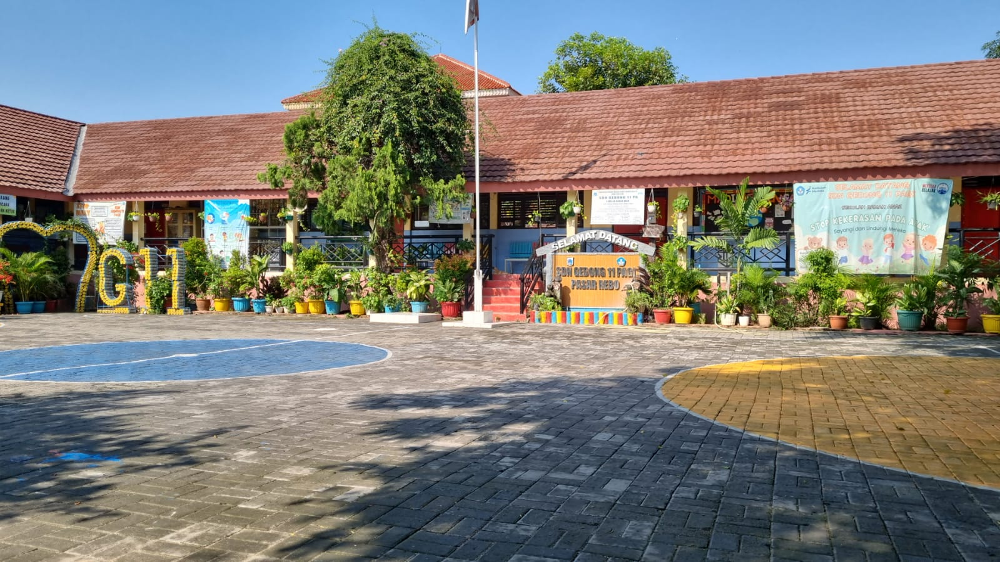

Mewujudkan peserta didik yang cerdas, berakhlak mulia, disiplin, mandiri, dan memiliki semangat belajar untuk meraih masa depan yang lebih baik.
Lihat Tentang Kami
SDN Gedong 11 Pagi merupakan Sekolah Dasar Negeri dibawah naungan Suku Dinas Pendidikan Wilayah II Kota Administrasi Jakarta Timur, memiliki akreditasi A (Amat Baik) yang berlokasi di Jl. H. Taiman Barat II RT. 05 RW. 10 Kelurahan Gedong Kecamatan Pasar Rebo Kota Administrasi Jakarta Timur
Informasi dan agenda penting seputar kegiatan akademik sekolah
Rekam jejak kebanggaan, kreativitas, dan talenta luar biasa siswa SDN Gedong 11 Pagi
Data Daya Tampung rencana rombongan belajar dan keketatan seleksi.
Mari bergabung bersama keluarga besar SDN Gedong 11 Pagi.
Lihat Panduan & Syarat Pendaftaran